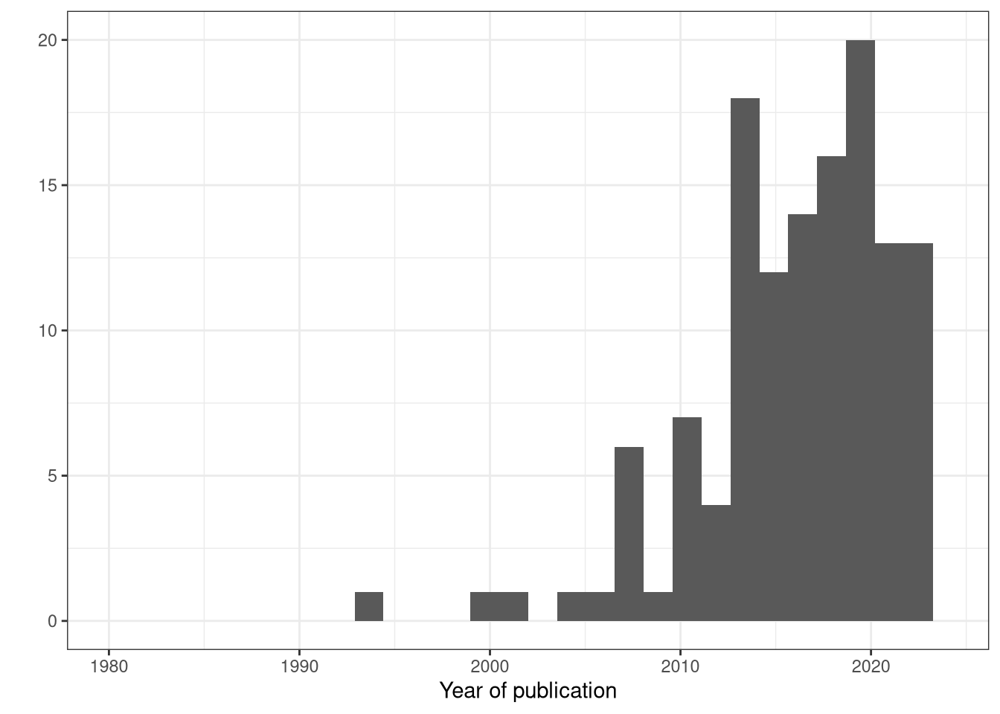

| Code availability | N |
|---|---|
| No | 106 (82%) |
| Yes | 23 (18%) |
Home
PRISMA
(As of 2024-01-31)
3870 references imported for screening as 3870 studies
128 duplicates identified manually
799 duplicates identified by Covidence
2943 studies screened against title and abstract
2527 studies excluded
416 studies assessed for full-text eligibility
262 studies excluded
171 Does not discuss dyadic measure
86 Metric not applicable to spatiotemporal data
2 Book chapter
2 Full text not in English
1 Thesis
0 studies ongoing
0 studies awaiting classification
154 studies includedCode availability
Programming language / GUI program
Out of 129 articles, 45 did not list a programming language or GUI program. Of the 84 that did, 20 articles listed more than one programming language or GUI program, therefore the total count below will be greater than the number of articles.
| Programming language / GUI software | N |
|---|---|
| R | 57 (50.44%) |
| MATLAB | 15 (13.27%) |
| Python | 6 (5.31%) |
| CUDA | 4 (3.54%) |
| Ucinet | 3 (2.65%) |
| Perl | 3 (2.65%) |
| C++ | 3 (2.65%) |
| NetLogo | 2 (1.77%) |
| SPSS | 2 (1.77%) |
| SchoolTracker | 1 (0.88%) |
| Bonsai | 1 (0.88%) |
| Keras | 1 (0.88%) |
| TensorFlow | 1 (0.88%) |
| SYSTAT | 1 (0.88%) |
| Fortran | 1 (0.88%) |
| Mathematica | 1 (0.88%) |
| Brodgar | 1 (0.88%) |
| Stata | 1 (0.88%) |
| ArcGIS | 1 (0.88%) |
| Pascal | 1 (0.88%) |
| Matlab | 1 (0.88%) |
| Hawth Tools for ArcGIS | 1 (0.88%) |
| Wolfram Mathematica | 1 (0.88%) |
| Ctrax | 1 (0.88%) |
| StreamPix 5 | 1 (0.88%) |
| MoveMine | 1 (0.88%) |
| Java | 1 (0.88%) |
Software packages
Out of 128 articles, 104 did not list a software package. Of the 24 that did, 11 articles listed more than one software package , therefore the total count below will be greater than the number of articles.
| Software package | N |
|---|---|
| wildlifeDI | 9 (19.6%) |
| adehabitat | 2 (4.3%) |
| moveVis | 2 (4.3%) |
| ctmm | 2 (4.3%) |
| CircStats | 2 (4.3%) |
| geosphere | 2 (4.3%) |
| corrMove | 2 (4.3%) |
| adehabitatHR | 2 (4.3%) |
| numpy | 2 (4.3%) |
| h5py | 2 (4.3%) |
| matplotlib | 2 (4.3%) |
| pathlib | 2 (4.3%) |
| swaRm | 1 (2.2%) |
| forecast (cross correlation) | 1 (2.2%) |
| move | 1 (2.2%) |
| moveUD | 1 (2.2%) |
| boot | 1 (2.2%) |
| MASS | 1 (2.2%) |
| BBMM | 1 (2.2%) |
| momentuHMM | 1 (2.2%) |
| adehabitatLT | 1 (2.2%) |
| EloRating | 1 (2.2%) |
| compete | 1 (2.2%) |
| changepoint | 1 (2.2%) |
| igraph | 1 (2.2%) |
| rethinking | 1 (2.2%) |
| OpenCV | 1 (2.2%) |
Metrics
| Metric | N |
|---|---|
| interindividual distance | 52 (41.27%) |
| nearest neighbour distance | 19 (15.08%) |
| directional correlation delay | 16 (12.70%) |
| position within group | 13 (10.32%) |
| distance to group centroid | 13 (10.32%) |
| direction | 12 (9.52%) |
| zones | 12 (9.52%) |
| speed | 12 (9.52%) |
| DI | 7 (5.56%) |
| directional alignment | 7 (5.56%) |
| Prox | 6 (4.76%) |
| group centroid | 6 (4.76%) |
| polarization | 6 (4.76%) |
| velocity | 5 (3.97%) |
| voronoi | 5 (3.97%) |
| group velocity | 5 (3.97%) |
| rank position within group | 5 (3.97%) |
| direction to group centroid | 5 (3.97%) |
| Lixn | 4 (3.17%) |
| distance | 4 (3.17%) |
| acceleration | 3 (2.38%) |
| time spent leading group | 3 (2.38%) |
| interindividual direction | 3 (2.38%) |
| Don | 3 (2.38%) |
| HAI | 3 (2.38%) |
| group speed | 3 (2.38%) |
| IAB | 3 (2.38%) |
| Cs | 3 (2.38%) |
| DI in direction | 3 (2.38%) |
| DI in displacement | 3 (2.38%) |
| movement initiations pull and anchor | 3 (2.38%) |
| relative angle | 2 (1.59%) |
| Cr | 2 (1.59%) |
| turning angle | 2 (1.59%) |
| entropy | 2 (1.59%) |
| constance | 2 (1.59%) |
| concurrence | 2 (1.59%) |
| flock | 2 (1.59%) |
| convergence | 2 (1.59%) |
| divergence | 2 (1.59%) |
| attraction | 2 (1.59%) |
| proximity | 2 (1.59%) |
| fission fusion | 2 (1.59%) |
| group size | 2 (1.59%) |
| group bearing | 2 (1.59%) |
| diffusive movement correlation | 2 (1.59%) |
| drift movement correlation | 2 (1.59%) |
| overall component movement correlation | 2 (1.59%) |
| Doncaster | 2 (1.59%) |
| optimal causal entropy | 2 (1.59%) |
| group direction | 2 (1.59%) |
| change point detection | 2 (1.59%) |
| temporal correlation delay | 2 (1.59%) |
| position | 2 (1.59%) |
| distance to leader | 1 (0.79%) |
| direction to leader | 1 (0.79%) |
| Doncaster’s | 1 (0.79%) |
| rank distance to group centroid | 1 (0.79%) |
| coefficient of sociality | 1 (0.79%) |
| difference coefficient | 1 (0.79%) |
| motion azimuth | 1 (0.79%) |
| turn | 1 (0.79%) |
| opposition | 1 (0.79%) |
| dispersion | 1 (0.79%) |
| trendsetters | 1 (0.79%) |
| independent | 1 (0.79%) |
| propagation | 1 (0.79%) |
| group turn | 1 (0.79%) |
| group concurrence | 1 (0.79%) |
| cross correlation | 1 (0.79%) |
| Granger causality | 1 (0.79%) |
| neural network model | 1 (0.79%) |
| patch occupancy | 1 (0.79%) |
| mathematical model | 1 (0.79%) |
| route selection | 1 (0.79%) |
| path tortuosity | 1 (0.79%) |
| group cohesion | 1 (0.79%) |
| trend setting | 1 (0.79%) |
| fleeing event | 1 (0.79%) |
| approaching event | 1 (0.79%) |
| withdrawal event | 1 (0.79%) |
| group convex hull area | 1 (0.79%) |
| synchronicity | 1 (0.79%) |
| mFLICA | 1 (0.79%) |
| HMM | 1 (0.79%) |
| pointwise mutual information | 1 (0.79%) |
| turn influence | 1 (0.79%) |
| speed influence | 1 (0.79%) |
| contact | 1 (0.79%) |
| persistence index | 1 (0.79%) |
| persistence velocity | 1 (0.79%) |
| turning velocity | 1 (0.79%) |
| group distance | 1 (0.79%) |
| trend-setter | 1 (0.79%) |
| track | 1 (0.79%) |
| leadership | 1 (0.79%) |
| encounter | 1 (0.79%) |
| breakup | 1 (0.79%) |
| route efficiency | 1 (0.79%) |
| Ca | 1 (0.79%) |
| kappa coefficient | 1 (0.79%) |
| milling | 1 (0.79%) |
| herding | 1 (0.79%) |
| nearest neighbour direction | 1 (0.79%) |
| pertubation test of dynamic interaction | 1 (0.79%) |
| stochastic process model | 1 (0.79%) |
| approach-avoidance event | 1 (0.79%) |
| movement disparity | 1 (0.79%) |
| movement strength | 1 (0.79%) |
| transfer entropy | 1 (0.79%) |
| potential path area | 1 (0.79%) |
| ORTEGA | 1 (0.79%) |
| closed swarm | 1 (0.79%) |
| cross correlation in speed | 1 (0.79%) |
| synchronization ratio | 1 (0.79%) |
| synchronized switch in direction | 1 (0.79%) |
| group sphericity | 1 (0.79%) |
| group stretch | 1 (0.79%) |
| convex hull | 1 (0.79%) |
| directedness | 1 (0.79%) |
| elongation | 1 (0.79%) |
| tilt | 1 (0.79%) |
| following order parameter | 1 (0.79%) |
| adjusted order parameter | 1 (0.79%) |
Temporal
| covidence_number | study_id | title | reviewer_name | type_of_study | species | region | metric_used_or_described | citation_for_metric_if_not_introduced_in_this_current_paper | interpretation | data_input_required | definitions_of_leader_initiator_etc | dominance_metric | interpretation_2 | citation_for_dominance_metric_if_not_introduced_in_this_paper | analysis_code_availability | programming_language | analysis_code_link | analysis_code_availability_location | software_package_s_used | other_comments_about_code_availability | discussion | etc | metric_agg | yr |
|---|---|---|---|---|---|---|---|---|---|---|---|---|---|---|---|---|---|---|---|---|---|---|---|---|
| 3676 | Weesner 2023 | Interaction rules guiding collective behaviour in echolocating bats | Consensus | Empirical | Tadarida brasiliensis | Oklahoma, USA | velocity; distance and bearing to leader; heading delay; time dependent delayed directional correlation; | heading delay and time delayed correlation this paper | NA | XYT | NA | NA | NA | NA | No | MATLAB; R | NA | NA | NA | NA | heading delay similar to Nagy 2010 but not cited | NA | velocity; distance to leader; direction to leader; directional correlation delay; directional correlation delay | 2023 |
| 3438 | Strandburg-Peshkin 2013 | Visual sensory networks and effective information transfer in animal groups | Consensus | Empirical | Notemigonus crysoleucas | Princeton, New Jersey, USA | velocity; acceleration; bearing; IID; voronoi | NA | NA | XYT | NA | NA | NA | NA | No | SchoolTracker; R | NA | NA | NA | NA | NA | NA | interindividual distance; direction; velocity; acceleration; voronoi | 2013 |
| 3427 | Sugiura 2014 | Japanese macaques depend not only on neighbours but also on more distant members for group cohesion | Consensus | Empirical | Macaca fuscata | Kinkazan Island, Japan | IID | NA | NA | XYT | NA | NA | NA | NA | No | NA | NA | NA | NA | NA | NA | NA | interindividual distance | 2014 |
| 3141 | Rahman 2020 | School formation characteristics and stimuli based modeling of tetra fish | Consensus | Empirical | Gymnocorymbus ternetzi | Utah | relative angle; IID; zones; velocity of group; | NA | NA | XYT | leadership as tendency to be at the front of the group | NA | NA | NA | No | NA | NA | NA | NA | NA | NA | NA | interindividual distance; zones; relative angle; group velocity | 2020 |
| 3132 | Quaglietta 2014 | Sociospatial organization of a solitary carnivore, the Eurasian otter (Lutra lutra) | Consensus | Empirical | Lutra lutra | Alentejo, Portugal | Doncaster’s; correlation coefficient (Cr); DI; proportion of fixes where dyad is interacting | Doncaster 1990; Cr Shirabe 2006; Long and Nelson 2012 | NA | XYT | interaction if within 100 m anadd 1 hour | NA | NA | NA | No | R | NA | NA | wildlifeDI | NA | NA | home range overlap with adehabitat kerneloverlap | DI; Doncaster’s; Cr; interindividual distance | 2014 |
| 3064 | Quera 2023 | Motion leadership and local interaction in two species of freshwater fish (Danio rerio and Hyphessobrycon herbertaxelrodi) | Consensus | Empirical | Danio rerio; Hyphessobrycon herbertaxelrodi | NA | directional correlation delay; momentary leadership rank; duration of leadership episodes; forefront index; acceleration; relative angle between fish; turning angle | Nagy et al 2010; forefront index (Gimeno 2018); acceleration Herbert-Read et al 2011 and Kartz et al 2011; | forefront index is front-back distance along group’s axis of movement | XYT | following Krause et al. (2000) and Collignon et al. (2019), the authors define a motion leader as an individual who initiates movement towards a certain direction and is followed by other group members | egalitarian leadership index | monopolization of leadership rank | Collignon et al 2019 | No | R | NA | NA | NA | data: https://drive.google.com/drive/folders/1rmTI3W5Wh9zHukKRx4JPrpwALeFWkw3G?usp=sharing | NA | NA | directional correlation delay; acceleration; turning angle; rank position within group; time spent leading group; position within group; interindividual direction | 2023 |
| 3012 | O’Bryan 2019 | Contact calls facilitate group contraction in free-ranging goats (Capra aegagrus hircus) | Consensus | Empirical | Capra aegagrus hircus | Tsaobis Nature Park, Namibia | distance to group centroid; rank distance from group centroid; nearest neighbour distance; velocity of group; | NA | NA | XYT | NA | NA | NA | NA | No | R | NA | NA | swaRm | NA | NA | NA | nearest neighbour distance; distance to group centroid; group velocity; rank distance to group centroid | 2019 |
| 2992 | Ordiz 2008 | Distance-dependent effect of the nearest neighbor: Spatiotemporal patterns in brown bear reproduction | Consensus | Empirical | Ursus arctor | Dalarna, Sweden; Gavleborg, Sweden; Heddmaark County, Norway | nearest neighbour distance | NA | NA | XYT | NA | NA | NA | NA | No | R | NA | NA | NA | NA | NA | NA | nearest neighbour distance | 2008 |
| 2802 | Mielke 2020 | Predictability and variability of association patterns in sooty mangabeys | Consensus | Empirical | Cercocebus atys atys | Taï National Park, Côte d’Ivoire | entropy | Ramos-Fernandez et al. 2018 | If all subgroup compositions contained the same individuals, entropy |
would be minimal, as each single observation would not carry any information different from what is already available. If all subgroup compositions are different from each other, entropy would be maximal, as previous information would not allow the correct prediction of future subgroup compositions |XYT |group defined as all individuals within visual contact of focal individual |focal observations |NA |NA |No |R |NA |NA |NA |NA |NA |NA |entropy | 2020| | 2773|Miller 2012 |Using Spatially Explicit Simulated Data to Analyze Animal Interactions: A Case Study with Brown Hyenas in Northern Botswana |Consensus |Empirical; Simulation |Parahyaena brunnea |Makgadikgadi Pans, Botswana |coefficient of sociality; Lixn; Don; HAI; difference coefficient |coefficient of sociality: Poole 1995; Lixn: Minta 1992; Don: Doncaster 1990; HAI Atwood and Weeks 2003; difference coeffienct White and Harris 1994 |NA |XYT |NA |NA |NA |NA |No |NA |NA |NA |NA |NA |NA |NA |Lixn; Don; HAI; coefficient of sociality; difference coefficient | 2012| | 2674|Lunardi 2014 |Fission-fusion dynamics of Guiana dolphin (Sotalia guianensis) groups at Pipa Bay, Rio Grande do Norte, Brazil |Consensus |Empirical |Sotalia guianens |Pipa Bay, Rio Grande do Norte, Brazil |interindividual distance |NA |NA |XYT |NA |NA |NA |NA |No |NA |NA |NA |NA |NA |NA |NA |interindividual distance | 2014| | 2642|Laube 2002 |Analyzing relative motion within groups of trackable moving point objects |Consensus |Empirical |Rangifer tarandus |Yukon, NWT, Alaska; |motion azimuth; speed; change of speed; constance; turn; concurrence; opposition; dispersion; trendsetters; independent; propagation; group turn; group concurrence; flock; convergence; divergence |motion azimuth: this paper |azimuth has eight classes; |XYT |NA |NA |NA |NA |No |NA |NA |NA |NA |NA |NA |NA |speed; constance; concurrence; flock; convergence; divergence; motion azimuth; speed; turn; opposition; dispersion; trendsetters; independent; propagation; group turn; group concurrence | 2002| | 2635|Ling 2019 |Costs and benefits of social relationships in the collective motion of bird flocks |Consensus |Empirical; Model |Corvus monedula |Cornwall, UK |nearest neighbour distance; |NA |NA |XYT |NA |NA |NA |NA |No |NA |NA |NA |NA |data https://figshare.com/s/c55eb82bab800571d25d |NA |NA |nearest neighbour distance | 2019| | 2629|Leighty 2008 |Rumble vocalizations mediate interpartner distance in African elephants, Loxodonta africana |Consensus |Empirical |Loxodonta africana |Bay Lake, Florida, USA |interindividual distance; |NA |NA |XYT; audiologgers |proximity defined as 8 m; approach/avoidance after event defined as changes in interindividual distance after an event |NA |NA |NA |No |NA |NA |NA |NA |NA |NA |NA |interindividual distance | 2008| | 2606|Larsch 2018 |Biological Motion as an Innate Perceptual Mechanism Driving Social Affiliation |Consensus |Empirical |Danio rerio |NA |interindividual distance; attraction |attraction: this paper |attraction is interindividual distance shuffled - observed / shuffled |XYT |NA |NA |NA |NA |Yes |Python; Bonsai; NetLogo |https://bitbucket.org/mpinbaierlab/larschandbaier2018 |Bitbucket |NA |NA |NA |also agent based model |interindividual distance; attraction | 2018| | 2489|Kotrschal 2018 |Brain size does not impact shoaling dynamics in unfamiliar groups of guppies (Poecilia reticulata) |Consensus |Empirical |Poecilia reticulata |NA |median speed within group; alignment; median global radius; mean nearest neighbour distance |NA |NA |XYT |NA |NA |NA |NA |No |MATLAB |NA |NA |NA |NA |NA |NA |nearest neighbour distance; group speed; directional alignment; distance to group centroid | 2018| | 2306|Hollingdale 2018 |Inferring symmetric and asymmetric interactions between animals and groups from positional data |Consensus |Empirical |Cervus elaphus scoticus; Ovis aries |North East Scotland |mean kth nearest neighbour distance; mean distance to center of mass; distance to center of mass; voronoi tessellation area; orientation; attraction; repulsion zones; cross correlation; Granger causality; |created testing data of simulated spatial positions using modified version of self driven particles from: Vicsek et al 1995 Phys Rev Let and Couzin et al 2002 J Theor Biol (zones); Granger causality: Granger 1969 Econometrica |convex hull is the smallest convex set that contains all points, area calculated here every 1, 3 or 5 hours; mean NN distance where closer the distance, higher the likelihood of an interaction and distance required for visual range interactions; centre of mass is mean position of all individuals; voronoi area can be used as a measure of isolation and turned into a network of colocation; Granger causality indicates that one time series can predict the other; |XYT |NA |NA |NA |NA |No |R |NA |NA |forecast (cross correlation) |data https://doi.org/10.26182/ 5bf4fba095b1f |Granger causality; The core principle of the Vicsek model is that particles (representing animals) move with a constant velocity and align the direction of their motion with the direction of the particles around them. The Couzin model extends this by creating three different zones of: repulsion; orientation; and attraction |convex hull area |attraction; nearest neighbour distance; distance to group centroid; distance to group centroid; voronoi; direction; zones; cross correlation; Granger causality | 2018| | 2263|Heras 2019 |Deep attention networks reveal the rules of collective motion in zebrafish |Consensus |Model |Danio rerio |NA |deep interaction neural network model |this paper |NA |XYT |NA |NA |NA |NA |Yes |Python; Keras; TensorFlow |https://gitlab.com/polavieja_lab/fishandra |GitLab |NA |NA |NA |deep interaction network |neural network model | 2019| | 2178|Hansen 2016 |Environmental quality determines finder-joiner dynamics in socially foraging three-spined sticklebacks (Gasterosteus aculeatus) |Consensus |Empirical |Gasterosteus aculeatus |Wales, UK |distance between individuals; patch occupancy |NA |NA |XYT |finding where fish entered unoccupied patch whereas entering an occupied path was considered joining |NA |NA |NA |No |NA |NA |NA |NA |NA |finder’s share, finder’s advantage |NA |interindividual distance; patch occupancy | 2016| | 2138|Frost 2012 |Spatial distribution and habitat utilization of the Zebra-tailed lizard (Callisaurus draconoides) |Consensus |Empirical |Callisaurus draconoides |Tucson, Arizona |interindividual distance; nearest neighbour distance |NA |NA |NA |NA |NA |NA |NA |No |SYSTAT |NA |NA |NA |NA |NA |NA |interindividual distance; nearest neighbour distance | 2012| | 2017|Escobedo 2020 |A data-driven method for reconstructing and modelling social interactions in moving animal groups: Reconstructing social interactions |Consensus |Empirical |Hemigrammus rhodostomus; Danio rerio |NA |distance and direction between individuals; force map; mathematical model to extract social interactions from behavioural data |this paper: mathematical model to extract social interactions from behavioural data |NA |XYT |NA |NA |NA |NA |Yes |Fortran |https://doi.org/10.6084/m9.figshare.11777325 |FigShare |NA |NA |limitations of force maps |NA |interindividual distance; interindividual direction; zones; mathematical model | 2020| | 2016|Eckhardt 2015 |Spatial cohesion of adult male chimpanzees (Pan troglodytes verus) in Taï National Park, Côte d’Ivoire |Consensus |Empirical |Pan troglodytes verus |Taï National Park, Côte D’Ivoire |interindividual distances |NA |NA |XYT |NA |NA |NA |NA |No |R |NA |NA |NA |NA |NA |NA |interindividual distance | 2015| | 1999|Flack 2013 |Pairs of pigeons act as behavioural units during route learning and co-navigational leadership conflicts |Consensus |Empirical |Columba livia |Wytham, England |mean nearest neighbour distance; leading/following behaviour |leading/following behaviour: Flack 2012 |NA |NA |NA |NA |NA |NA |No |MATLAB |NA |NA |NA |NA |NA |NA |nearest neighbour distance; route selection | 2013| | 1590|Broekhuis 2019 |Using GPS collars to investigate the frequency and behavioural outcomes of intraspecific interactions among carnivores: A case study of male cheetahs in the Maasai Mara, Kenya |Consensus |Empirical |Acinonyx jubatus |Maasai Mara, Kenya |distance between individuals; path tortuosity before encounter where NSD divided by total distance; proximity |Long 2014 (wildlifeDI citation) |NA |XYT |NA |NA |NA |NA |No |R |NA |NA |adehabitat; wildlifeDI; moveVis |NA |NA |static interaction: home range overlap; |interindividual distance; proximity; path tortuosity | 2019| | 1498|Baden 2016 |Resource seasonality and reproduction predict fission-fusion dynamics in black-and-white ruffed lemurs (Varecia variegata) |Consensus |Empirical |Varecia variegata |Madagascar |cohesion = greatest pairwise distance within a group; fission = gte 1 individual absent in 2 consecutive scans; fusion = gte 1 individual now present in 2 consecutive scans |NA |NA |XYT |NA |NA |NA |NA |No |NA |NA |NA |NA |NA |NA |NA |group cohesion; fission fusion; fission fusion | 2016| | 1444|Andrienko 2013 |Space transformation for understanding group movement |Consensus |Algorithm; Empirical |Papio spp |De Hoop Nature Reserve, South Africa |space transformation; position within group; trend setting |this paper |space transformation from geographical space too relative positions with respect to group center and movement direction; trend setting where close to group center but direction differs from group by at least 45 degrees; |XYT |leader is an object that moves in front of others; trend setter is an object whose movements are copied by others |NA |NA |NA |No |NA |NA |NA |NA |NA |NA |NA |position within group; distance to group centroid; direction to group centroid; trend setting | 2013| | 1405|Aguilar-Melo 2018 |Fission-fusion dynamics as a temporally and spatially flexible behavioral strategy in spider monkeys |Consensus |Empirical |Ateles geoffroyi |Mexico |IID |NA |IID used to define groups (lte 30 m, chain rule) |XYT |fission when gte 1 were not observed with a group for 2 consecutive scans; fusion when gte 1 who were previously not observed with group are observed with group for 2 consecutive scans |NA |NA |NA |No |NA |NA |NA |NA |NA |more cohesive subgroups when rainfall increased, more unstable when there is high temporal variability in food resources |NA |interindividual distance | 2018| | 1088|Hansen 2015 |The influence of nutritional state on individual and group movement behaviour in shoals of crimson-spotted rainbowfish (Melanotaenia duboulayi) |Consensus |Empirical |Melanotaenia duboulayi |NA |interindividual distance; mean nearest neighbour distance |NA |NA |XYT |fish considered isolated if not within three body lengths of any other fish; group defined by within three body lengths |NA |NA |NA |No |R |NA |NA |NA |NA |NA |NA |interindividual distance; nearest neighbour distance | 2015| | 1085|Hrolenok 2014 |Inferring Social Structure of Animal Groups From Tracking Data |Consensus |Model |NA |NA |fleeing events; approaching behaviour; withdrawal behaviour |this paper |NA |XYT; posture |NA |dominance measure |if individual A flees from individual B more frequently than the opposite |this paper |No |NA |NA |NA |NA |NA |NA |authors use agent based model |fleeing event; approaching event; withdrawal event | 2014| | 1053|Kleinhappel 2019 |Stress-induced changes in group behaviour |Consensus |Empirical |Danio rerio |Lincoln, England |interindividual distances; mean interindividual distances; nearest neighbor distance; group convex hull area; mean distance to group center; |NA |NA |XYT |NA |NA |NA |NA |No |R; MATLAB |NA |NA |NA |script for models only included: https://static-content.springer.com/esm/art%3A10.1038%2Fs41598-019-53661-w/MediaObjects/41598_2019_53661_MOESM2_ESM.pdf |NA |NA |interindividual distance; interindividual distance; nearest neighbour distance; group convex hull area; distance to group centroid | 2019| | 974|Barocas 2016 |Coastal latrine sites as social information hubs and drivers of river otter fissione-fusion dynamics |Consensus |Empirical |Lontra canadensis |60.10 N, 148 W, southcentral Alaska, USA |group size |NA |NA |XYT |fission and fusion defined as joining and leaving group in subsequent observations |NA |NA |NA |No |NA |NA |NA |NA |NA |NA |proximity tag |group size | 2016| | 901|Miller 2011 |Redefining membership in animal groups |Consensus |Empirical |Danio rerio |NA |nearest neighbour distance |NA |NA |XYT |NA |NA |NA |NA |No |Mathematica; SPSS |NA |NA |NA |NA |NA |NA |nearest neighbour distance | 2011| | 826|Gygax 2010 |Socio-Spatial Relationships in Dairy Cows |Consensus |Empirical |Bos taurus |NA |synchronicity; interindividual distance |NA |synchronicity is the number of observations of the dyad in the same functional area divided by total times either was in that same area and data was available for both; |XYT |NA |NA |NA |NA |No |R |NA |NA |NA |NA |NA |NA |interindividual distance; synchronicity | 2010| | 801|Ward 2021 |Nonchalant neighbors: Space use and overlap of the critically endangered Elongated Tortoise |Consensus |Empirical |Indotestudo elongata |Sakaerat Biosphere Reserve, Thailand |DI |Long and Nelson 2013 |NA |XYT |NA |NA |NA |NA |Yes |R |https://osf.io/6vfp9 |OSF; Dryad |move; ctmm; moveUD; wildlifeDI |NA |NA |brms |DI | 2021| | 798|Haydon 2008 |Socially informed random walks: incorporating group dynamics into models of population spread and growth |Consensus |Empirical |Cervus canadensis |Elk Island National Park, Alberta, Canada |interindividual distances |NA |NA |XYT |fusion where solitary to grouped and fission where grouped to solitary |NA |NA |NA |No |NA |NA |NA |NA |NA |NA |behavioural states; HFI herd fragmentation index where 0 indicates one group for entire herd |interindividual distance | 2008| | 749|Amornbunchornvej 2018 |Coordination Event Detection and Initiator Identification in Time Series Data |Consensus |Model |NA |NA |FLICA |this paper |following network and coordination identification |XYT |following relation is where two individuals perform the same sequence of actions with some fixed delay; initiator is individual who first performs a sequence of actions and all other individuals follow |leadership from movement initiations |NA |this paper |Yes |MATLAB |https://github.com/CompBioUIC/FLICA |GitHub |NA |NA |coordination initiator inference problem |NA |mFLICA | 2018| | 748|Kölzsch 2020 |Goose parents lead migration V |Consensus |Empirical |Anser anser albifrons |Netherlands |position front-back in group; |NA |NA |XYT |NA |NA |NA |NA |No |R |NA |NA |NA |data doi:10.5441/001/1.ms87s2m6 |NA |NA |position within group | 2020| | 676|Böhm 2008 |Dynamic interactions among badgers:: implications for sociality and disease transmission |Consensus |Empirical |Meles meles |North York Moors National Park, northeast England |interindividual distance within a distance threshold |Doncaster 1990 |NA |NA |NA |NA |NA |NA |No |Brodgar |NA |NA |NA |NA |NA |NA |interindividual distance | 2008| | 672|WHITE 1994 |ENCOUNTERS BETWEEN RED FOXES (VULPES-VULPES) - IMPLICATIONS FOR TERRITORY MAINTENANCE, SOCIAL COHESION AND DISPERSAL |Consensus |Empirical |Vulpes vulpes |Bristol, UK |IID; distance; bearing |NA |NA |XYT |NA |NA |NA |NA |No |NA |NA |NA |NA |NA |NA |NA |interindividual distance; direction; distance | 1994| | 655|Josephs 2016 |Working the crowd: sociable vervets benefit by reducing exposure to risk |Consensus |Empirical |Chlorocebus pygerythrus |South Africa |voronoi tesselations; group direction; position within group along axis of movement |NA |voronoi tesselations as a measure of exposure to risk |XYT |NA |ad libitum observations |NA |NA |No |Ucinet; Stata; ArcGIS |NA |NA |NA |NA |NA |NA |group bearing; voronoi; position within group | 2016| | 652|Langrock 2014 |Modelling group dynamic animal movement |Consensus |Empirial; Simulation |Rangifer tarandus |Not stated |hidden Markov model where states are related to distance to group center or some focal individual |this paper |NA |XYT |NA |NA |NA |NA |Yes |R |https://besjournals.onlinelibrary.wiley.com/action/downloadSupplement?doi=10.1111%2F2041-210X.12155&file=mee312155-sup-0002_AppendixS2.pdf |Supplemental materials |CircStats; boot; MASS |NA |our approach is to capture group fission-fusion dynamics where individuals are periodically attracted to an abstract point, which we call the group centroid. This centroid could be the centre of mass of the group (a proxy for social networks, as described by Croft et al., 2010) or a dominant “informed” alpha animal that leads the group (as described by Nagy et al., 2012). |NA |HMM | 2014| | 629|Benhamou 2014 |Movement-based analysis of interactions in African lions |Consensus |Empirical |Panthera leo |Hwange National Park, Zimbabwe |movement interaction where synchronized locations (within 2 min) |introduced in this paper |tendency to move independently, jointly or avoid each other |XYT |NA |NA |NA |NA |No |Pascal |NA |NA |NA |NA |Macdonald et all 1980 and Doncaster 1990 did not take serial correlation into account, and this issue remains unresolved by Shirabe 2006 and Long and Nelson 2013. These metrics also do not consider proximity of individuals making them movement coordination rather than interaction. The authors note their metric addresses movement interaction more directly but lacks a combination of direction and distance of movements. The study of animal interaction in space could benefit from a stronger methodological framework |home range overlap with Bhattacharyya’s coefficient (Bhattacharyya 1943) |IAB | 2014| | 601|Kano 2021 |Collective attention in navigating homing pigeons: group size effect and individual differences |Consensus |Empirical |Columba livia |Wytham, UK |directional correlation delay; distance from group center; mean interindividual distance; position along front-back axis; |Flack 2013, Nagy 2010, Pettit 2013 |NA |XYT; accelerometer |leader from directional correlation delay |leadership rank as mean directional correlation delay |NA |Nagy 2010 |No |NA |NA |NA |NA |NA |NA |NA |directional correlation delay; distance to group centroid; interindividual distance; position within group | 2021| | 592|Krause 2000 |Leadership in fish shoals |Consensus |Review |NA |NA |NA |NA |NA |NA |NA |NA |NA |NA |No |NA |NA |NA |NA |NA |costs and benefits of leading; mechanism of leadership behaviour; |NA | | 2000| | 570|Buderman 2021 |Caution is warranted when using animal space-use and movement to infer behavioral states |Consensus |Empirical |Odocoileus viginianus |Pennsylvania, USA |Prox; DI |Long and Nelson 2014 |distance between individuals during simultaneous locations; similarity of movement trajectories in relation to speed and direction |XYT |NA |NA |NA |NA |No |R |NA |NA |wildlifeDI; BBMM; momentuHMM |data https://datadryad.org/stash/dataset/doi:10.5061/dryad.mgqnk98zz |NA |home range overlap, hidden Markov models |Prox; DI | 2021| | 568|Heesen 2015 |Ecological and Social Determinants of Group Cohesiveness and Within-Group Spatial Position in Wild Assamese Macaques |Consensus |Empirical |Macaca assamensis |Phu Khieo Wildlife Sanctuary, Thailand |interindividual distances; mean nearest neighbour distance; distance from group center |NA |NA |XYT |NA |ad hoc observations |NA |NA |No |R |NA |NA |NA |NA |NA |NA |interindividual distance; nearest neighbour distance; distance to group centroid | 2015| | 512|Meckbach 2021 |An Information-Theoretic Approach to Detect the Associations of GPS-Tracked Heifers in Pasture |Consensus |Empirical |heifer cow |Lower Saxony, Germany |interindividual distance; pointwise mutual information |PMI: Meckback et al 2015 BMC Bioinform; |PMI measures the probability of coincident occurrence of two variables (i.e., animals) with respect to the probability of independent occurrence |XYT |NA |NA |NA |NA |No |R |NA |NA |geosphere |NA |NA |NA |interindividual distance; pointwise mutual information | 2021| | 511|Sugiura 2011 |Variation in Spatial Cohesiveness in a Group of Japanese Macaques (Macaca fuscata) |Consensus |Empirical |Macaca fuscata |Kinkazan Island, Japan |IID; |NA |NA |XYT |NA |ad libitum agonistic interactions |NA |NA |No |NA |NA |NA |NA |NA |NA |NA |interindividual distance | 2011| | 507|Kaczensky 2021 |Post-release Movement Behaviour and Survival of Kulan Reintroduced to the Steppes and Deserts of Central Kazakhstan |Consensus |Empirical |Equus hemionus kulan |Kostanay, Kazakhstan |drift and diffusive movement correlation; interindividual distance |Calabrese et al 2018 |NA |XYT |NA |NA | |NA |No |R |NA |NA |corrMove; moveVis; ctmm |NA |NA |range overlap with ctmm |interindividual distance; diffusive movement correlation; drift movement correlation; overall component movement correlation | 2021| | 506|Fortin 2009 |Group-size-mediated habitat selection and group fusion-fission dynamics of bison under predation risk |Consensus |Empirical |Bison bison |Prince Albert National Park, Canada |interindividual distance |NA |NA |XYT |group/fusion when within 100 m; fission when two or more consecutive locations separated by > 100 m |NA |NA |NA |No |NA |NA |NA |NA |NA |NA |NA |interindividual distance | 2009| | 499|Pérez-Barbería 2015 |State-Space Modelling of the Drivers of Movement Behaviour in Sympatric Species |Consensus |Empirical |Ovis aries; Cervus elaphus; |Auchenblae, Scotland |interindividual distance; |NA |NA |XYT |NA |NA |NA |NA |No |R |NA |NA |NA |NA |NA |NA |interindividual distance | 2015| | 476|Pettit 2013 |Interaction rules underlying group decisions in homing pigeons |Consensus |Empirical; Simulation |Columba livia |Wytham, Oxford |directional correlation delay; distance and direction to neighbour; speed; |Nagy et al 2010; Herbert-Read et al 2011 |NA |XYT |leadership based on directional correlation delay; leadership also based on tendency to use route taken on solo flight |NA |NA |NA |No |Matlab |https://royalsocietypublishing.org/action/downloadSupplement?doi=10.1098%2Frsif.2013.0529&file=rsif20130529supp2.m |Supplemental materials |NA |Note supplement only points to simulation code |NA |NA |directional correlation delay; speed; interindividual distance; interindividual direction | 2013| | 455|Xu 2020 |Analysis of Cattle Social Transitional Behaviour: Attraction and Repulsion |Consensus |Empirical |Angus cow |Armidale, NSW, Australia |distance ranking; IID |NA |NA |XYT |NA |NA |NA |NA |No |NA |NA |NA |NA |NA |NA |NA |interindividual distance; rank position within group | 2020| | 445|Biro 2006 |From compromise to leadership in pigeon homing |Consensus |Empirical |Columba livia domestica |England |nearest neighbour distance |NA |NA |XYT |NA |proportion of paired flights led |in paired flights, winner is the bird that remained closer to their established route |NA |No |MATLAB |NA |NA |NA |NA |NA |track length, track tortuosity, models of two hypothesized forces: attraction to established route and partner |nearest neighbour distance | 2006| | 436|Averly 2022 |Disentangling influence over group speed and direction reveals multiple patterns of influence in moving meerkat groups |Consensus |Empirical |Suricata suricatta |South Africa |turn influence; speed influence; time in front of group along front-back position of group |NA |influence of individual on group’s movement calculated where spatial distance at least some minimum divided by time taken to get there instead of temporal thresholds; propensity to be at the front of the group |XYT |NA |NA |NA |NA |Yes |R |https://doi.org/10.5281/zenodo.6913199; https://github.com/BaptisteAverly/Meerkat_TurnSpeed_Influence |Zenodo; GitHub |NA |NA |NA |NA |turn influence; speed influence; time spent leading group | 2022| | 427|Long 2015 |Quantifying spatial-temporal interactions from wildlife tracking data: Issues of space, time, and statistical significance |Consensus |Simulation |NA |NA |Prox; Don; Lixn; Cs; DI; Iab |Bertrand et all 1996; Doncaster 1990; Minta 1992; Kenward et al 1993; Long and Nelson 2013; Benhamou et al 2014 |NA |XYT |NA |NA |NA |NA |No |R |NA |NA |wildlifeDI |NA |variation in the performance of different measures of spatial-temporal interaction was observed; issues of space, time and statistical significance; |NA |Prox; DI; Lixn; Don; Cs; IAB | 2015| | 418|Bista 2022 |Space use, interaction and recursion in a solitary specialized herbivore: a red panda case study |Consensus |Empirical |Ailurus fulgens |Ilam district, eastern Nepal, 27.102° N, 87.982° E |Prox; DI in direction; DI in displacement; overall DI |Long et al 2014 |Prox measures proportion of simultaneous fixes within a distance threshold that approach each other; DI is an indicator of attraction and avoidance |XYT |temporal threshold 2 hour, distance threshold 100 m |NA |NA |NA |No |R |NA |NA |wildlifeDI |NA |NA |home-range overlap based on the Bhattacharya coefficient (BC) (Bhattacharyya 1943) |Prox; DI in direction; DI in displacement; DI | 2022| | 417|Aureli 2012 |What is a subgroup? How socioecological factors influence interindividual distance |Consensus |Empirical |Ateles geoffroyi |Costa Rica |IID |NA |NA |XYT |NA |NA |NA |NA |No |Hawth Tools for ArcGIS |NA |NA |NA |NA |NA |NA |interindividual distance | 2012| | 411|Dahl 2020 |An information-theory approach to geometry for animal groups |Consensus |Empirical |Canis lupus familiaris |25510 Pierrefontaine-les-Varans, Franc |mutual information between locations of dog i based and combinations of dogs j to w |this paper and information theory Shannon 1948 |extent which one individual’s movements can be explained by other individuals’ movements |XYT |NA |owner survey |NA |NA |No |NA |NA |NA |NA |NA |NA |method proposed is relatively simple mathematical approach rooted in information theory as opposed to highly sophisticated and mathematically complex algorithms |entropy | 2020| | 409|Zaitouny 2017 |Modelling and tracking the flight dynamics of flocking pigeons based on real GPS data (small flock) |Consensus |Model |Columba livia |Oxford, UK |mean position within group; IID; |NA |NA |XYT |NA |NA |NA |NA |No |MATLAB |NA |NA |NA |NA |Our model proves that the dynamics of a pigeon inside a flock are composed of two essential mechanisms: global mechanism where animals align with neighbours inside flock and local mechanism caused by intra-interactions within flock |NA |interindividual distance; group centroid | 2017| | 402|Long 2022 |Analyzing Contacts and Behavior from High Frequency Tracking Data Using the wildlifeDI R Package |Consensus |Empirical |Odocoileus virginianus; Humans |Love County, Oklahoma, USA |contact rate |this paper |NA |XYT |NA |NA |NA |NA |Yes |R |https://cran.r-project.org/web/packages/wildlifeDI/vignettes/wildlifeDI-vignette-contact_analysis.html |Supplemental; Package vignette |wildlifeDI |NA |NA |NA |contact | 2022| | 401|Miller 2021 |Exploring the utility of movement parameters to make inferences about dynamic interactions in moving objects |Consensus |Empirical; Simulation |Canis mesomelus |Etosha National Park, Namibi |absolute angle; relative angle; speed; step length; persistence index; persistence velocity; turning velocity; path-based dynamic interaction metrics |PI: Laidre et al., 2013; Vp: Gurarie et al., 2009, 2016; Vt Guarire et al 2009; DI metrics: Long et al 2014; |Persistence index (PI) is the cosine of the relative angle and measures how direct movement is |XYT |NA |NA |NA |NA |No |R |NA |NA |adehabitatLT; wildlifeDI |NA |step bias; path based vs point based metrics |NA |speed; relative angle; distance; direction; persistence index; persistence velocity; turning velocity; DI in direction; DI in displacement; DI | 2021| | 396|Holmes 2019 |Range overlap and spatiotemporal relationships of frugivorous lemurs at Kianjavato, Madagascar |Consensus |Empirical |Eulemur rufifrons; Varecia variegata; Eulemur rubriventer |Kianjavato, Madagascar |interindividual distances; |NA |NA |XYT |NA |NA |NA |NA |No |R |NA |NA |adehabitatHR; geosphere |NA |NA |Doncaster’s index of dynamic interaction (1990) |interindividual distance | 2019| | 393|Pérez-Barbería 2018 |Dynamics of social behaviour at parturition in a gregarious ungulate |Consensus |Empirical |Ovis aries |Aberdeenshire, Scotland |interindividual distances; position along front-back axis; group direction; group distance |NA |NA |XYT |leadership is ranked position along front-back axis |NA |NA |NA |No |R |NA |NA |adehabitat |NA |NA |NA |interindividual distance; group bearing; position within group; group distance | 2018| | 389|Burns 2012 |Consistency of Leadership in Shoals of Mosquitofish (Gambusia holbrooki) in Novel and in Familiar Environments |Consensus |Empirical |Gambusia holbrooki |Lake Northam, Sydney, Australia |spatial position within group |NA |ordinal 1-6 position along group’s traveling direction |XYT |NA |focal observation |NA |NA |No |NA |NA |NA |NA |NA |NA |NA |position within group | 2012| | 384|Pinacho-Guendulain 2017 |Influence of Fruit Availability on the Fission-Fusion Dynamics of Spider Monkeys (Ateles geoffroyi) |Consensus |Empirical |Ateles geoffroy |Yucatan peninsula, Mexico |interindividual distance; within group spatial disperson |NA |within group spatial disperson is longest interindividual distance within a group |XYT |group using 30 m chain rule |NA |NA |NA |No |R |NA |NA |NA |NA |NA |NA |interindividual distance; interindividual distance | 2017| | 382|Go 2020 |A mathematical model of herding in horse-harem group |Consensus |Empirical |horses |Serra D’Arga, Portugal |inertia force; repulsion force; group center of mass; attraction force |Lukeman et al 2010 |NA |XYT |NA |NA |NA |NA |No |MATLAB |NA |NA |NA |NA |NA |NA |zones; zones; group centroid; zones | 2020| | 362|Lührs 2013 |Simultaneous GPS tracking reveals male associations in a solitary carnivore |Consensus |Empirical |Cryptoprocta ferox |Kirindy, Madagascar |Doncaster; interindividual distances |Doncaster 1990 |NA |XYT |NA |NA |NA |NA |No |R |NA |NA |NA |NA |NA |home range overlap with adehabitatHR |interindividual distance; Doncaster | 2013| | 361|Laube 2005 |Discovering relative motion patterns in groups of moving point objects |Consensus |Empirical |NA |NA |proximity; concurrence; constance; trend-setter; track; flock; leadership; convergence; encounter; divergence; breakup |Laube and Imfeld 2002 |NA |XYT |leadership extends flock with constance over previous time steps | |NA |NA |No |NA |NA |NA |NA |NA |discuss implementations of REMO |NA |constance; concurrence; flock; convergence; divergence; proximity; trend-setter; track; leadership; encounter; breakup | 2005| | 358|Body 2015 |Fission-fusion group dynamics in reindeer reveal an increase of cohesiveness at the beginning of the peak rut |Consensus |Empirical |Rangifer tarandus |Kaamanen, Finland |nearest neighbour distances |NA |NA |XYT |fusion gte 2 groups merging into one; fission one group splitting into gte 2 |NA |NA |NA |No |NA |NA |NA |NA |NA |NA |chain rule nearest neighbour distance to identify aggregation |nearest neighbour distance | 2015| | 357|DellaLibera 2023 |Fission-fusion dynamics in sheep: the influence of resource distribution and temporal activity patterns |Consensus |Empirical |Ovis aries |Fowler’s Gap Arid Zone Research Station, Australia |sticky DBSCAN |original DBSCAN: Ester M, Kriegel HP, Sander J, Xu X. 1996 A density-based algorithm for discovering clusters in large spatial databases with noise. In Proc. of the 2nd Int. Conf. on Knowledge Discovery and Data Mining (KDD’96), pp. 226–231. Portland, OR: AAAI Press. |double radius stick DBSCAN improves on defining membership in a social group with a single radius by reducing fluctuations in membership from small changes in distances between individuals |XYT |define a fission and fusion event if one or more individuals left or joined the group, respectively. in the rare cases of missing data, missing individuals are not considered as having changed group membership, and individual ‘disappearances’ and ‘reappearances’ in the dataset are not considered as fission–fusion events |NA |NA |NA |Yes |Wolfram Mathematica; R |https://resources.wolframcloud.com/PacletRepository/resources/KatjaDellaLibera/StickyDBSCAN; https://github.com/katjadellalibera/StickyDBSCAN |GitHub; Wolfram Cloud |NA |data https://datadryad.org/stash/dataset/doi:10.5061/dryad.59zw3r2d6; R used for models; Mathematica used for DBSCAN |NA |NA |interindividual distance | 2023| | 355|Sankey 2022 |Pigeon leadership hierarchies are not dependent on environmental contexts or individual phenotypes |Consensus |Empirical |Columba livia |Royal Holloway University of London, UK |speed; route efficiency; directional correlation delay; spatial position within group |Nagy 2010 |leadership score as per Nagy 2010 and Pettit 2015 where 0.2 leadership score is on average a 0.2 s turning ahead of group |XYT |NA |video |NA |NA |No |NA |NA |NA |NA |NA |NA |NA |directional correlation delay; speed; position within group; route efficiency | 2022| | 352|Wielgus 2020 |Are fission-fusion dynamics consistent among populations? A large-scale study with Cape buffalo |Consensus |Empirical |Syncerus caffer caffer |Gonarezhou National Park and Hwange National Park, Zimbabwe; Kruger National Park, South Africa |IID |NA |NA |XYT |group where simultaneously within 1 km or >= 1 km for <= 2 hr; fusion where together then different by one time step; fission reverse |NA |NA |NA |No |R |NA |NA |adehabitatHR |NA |NA |mgcv, glmmTMB, performance |interindividual distance | 2020| | 350|Nishikawa 2014 |Activity and social factors affect cohesion among individuals in female Japanese macaques: A simultaneous focal-follow study |Consensus |Empirical |Macaca fuscata |Yakushuma Island, Japan |interindividual distances; |NA |NA |XYT |converged when IID less than 20 m; separated when IID greater than 20 m |ad libitum |NA |NA |No |R |NA |NA |NA |NA |NA |NA |interindividual distance | 2014| | 343|Long 2014 |A critical examination of indices of dynamic interaction for wildlife telemetry studies |Consensus |Empirical; Simulation |Odocoileus virginianus |Oklahoma, USA |Prox; Ca; Don; Cs; Lixn; HAI; Cr; DI |NA; Cole 1949; Doncaster 1990; Minta 1992; Kenward 1993; Atwood and Weeks 2003; Shirabe 2006; Long and Nelson 2013 |see Table 2 |XYT |NA |NA |NA |NA |Yes |R |www.geog.uvic.ca/spar/DynamicInteraction |Link |NA |Link is now dead |NA |excellent Table 2 |Prox; DI; Lixn; Don; HAI; Cs; Ca; Cr | 2014| | 339|Yomosa 2013 |Spatio-Temporal Structure of Hooded Gull Flocks |Consensus |Empirical |LLarus ridibundus |Osaka, Japan |nearest neighbour distance; directional correlation delay; bearing and distance compared to group centroid and average bearing |Nagy 2010 |NA |XYT |NA |NA |NA |NA |No |NA |NA |NA |NA |NA |NA |NA |directional correlation delay; nearest neighbour distance; direction to group centroid; distance to group centroid | 2013| | 337|Akos 2014 |Leadership and Path Characteristics during Walks Are Linked to Dominance Order and Individual Traits in Dogs |Consensus |Empirical |Canis familiaris |Hungary |directional correlation delay |Nagy 2010 |leading tendency |XYT |NA |leadership hierarchy derived from directional correlation delay; dominance questionnaire |NA |NA |No |NA |NA |NA |NA |NA |““correlation between leadership and dominance is consistent with a trend in ‘despotic’ social mammals”” |also used Dog Personality Questionnaire |directional correlation delay | 2014| | 333|Goldenberg 2022 |Social integration of translocated wildlife: a case study of rehabilitated and released elephant calves in northern Kenya |Consensus |Empirical |Loxodonta africana |Reteti Elephant Sanctuary, Kenya |interindividual distance |NA |NA |XYT |NA |NA |NA |NA |No |R |NA |NA |NA |NA |NA |NA |interindividual distance | 2022| | 328|Nishikawa 2021 |Activity synchrony and travel direction synchrony in wild female Japanese macaques |Consensus |Empirical |Macaca fuscata |Yakushima, Japan |interindividual distance; kappa coefficient; synchronization of travel direction |kappa coefficient Cohen 1960 |proportion of synchronization of behaviour compared to expected synchronization if activity patterns were random |XYT |NA |ad libitum |NA |NA |No |R |NA |NA | |NA | |NA |interindividual distance; kappa coefficient; directional alignment | 2021| | 305|Sárová 2010 |Graded leadership by dominant animals in a herd of female beef cattle on pasture |Consensus |Empirical |Bos taurus |Institute of Animal Science, Prague, Czech Republic |position along axis of group movement; position within group; bearing; step length; alignment with nearest neighbour; alignment with group centroid |NA |NA |XYT |NA |ad libitum |NA |NA |No |R |NA |NA |NA |NA |leadership arises from dominant cows positioned towards the front of the group, with straighter and shorter trajectories and more aligned with nearest neighbours and group |NA |direction; position within group; distance; position within group; directional alignment; direction to group centroid | 2010| | 304|Eikelboom 2020 |Inferring an animal’s environment through biologging: quantifying the environmental influence on animal movement |Consensus |Empirical |Holstein-Friesian dairy cows |Wageningen, Netherlands |interindividual distance |NA |NA |XYT |NA |NA |NA |NA |Yes |R |https://doi.org/10.4121/uuid:e552fe57-ab4f-4e31-83e3-82e1cbc06a70 |4TU.ResearchData |NA |NA |NA |NA |interindividual distance | 2020| | 287|Wang 2022 |The impact of individual perceptual and cognitive factors on collective states in a data-driven fish school model |Consensus |Model |Hemigrammus rhodostomus |NA |group dispersion; group polarization; milling |this paper |milling measures how much fish are turning in the same direction |XYT |NA |NA |NA |NA |No |NA |NA |NA |NA |NA |NA |NA |polarization; direction to group centroid; milling | 2022| | 285|Krueger 2014 |Movement initiation in groups of feral horses |Consensus |Empirical |Equus ferus caballus |Frosinone, Italy |herding; departure from group; spatial organization of group; pairwise following order |NA |herding is chasing individuals in a certain direction; departure; |XYT |NA |scan sampling behavioural data |NA |NA |No |SPSS; R; Ucinet |NA |NA |NA |NA |NA |NA |herding; fission fusion; position within group; rank position within group | 2014| | 283|Lemasson 2014 |Schooling Increases Risk Exposure for Fish Navigating Past Artificial Barriers |Consensus |Empirical |Morone chrysops X Morone saxatilis |Denver, CO, USA |orientation with respect to flow; speed; acceleration; turning angle; mean group size; variability of group size; nearest neighbour distance; direction to nearest neighbour |NA |NA |XYT |group when within 5 body lengths |NA |NA |NA |No |R |NA |NA |NA |NA |NA |NA |nearest neighbour distance; speed; acceleration; turning angle; direction; group size; group size; nearest neighbour direction | 2014| | 278|Chisholm 2019 |Parsimonious test of dynamic interaction |Consensus |Empirical |Panthera pardus; Lycaon pictus |Northern Botswana |perturbation based association and avoidance |this paper |tests for avoidance or association by perturbation of observed data of interindividual distances |XYT |NA |NA |NA |NA |Yes |MATLAB |https://github.com/ChisholmSarah/Avoidance |GitHub |NA |NA |NA |NA |pertubation test of dynamic interaction | 2019| | 256|Milner 2021 |Modelling and inference for the movement of interacting animals |Consensus |Empirical; Simulation |Papio anubis |Mpalla Research Centre; Kenya |Prox; dynamic interaction displacement and directio |Long et al 2014 |NA |XYT |leader is animal that is dominant to at least one and subordinate to none |NA |NA |NA |Yes |R |https://github.com/jemilner/influenceHierarchy; https://doi.org/10.5281/zenodo.3972134 |GitHub; Zenodo |wildlifeDI |data available on Movebank |NA |NA |Prox; DI in direction; DI in displacement | 2021| | 248|Miller 2015 |Towards a Better Understanding of Dynamic Interaction Metrics for Wildlife: a Null Model Approach |Consensus |Empirical |Hyaena brunnea |Makgadikgadi Pans, Botswana |risk-ratio; Prox; Lixn; Cs; HAI; IAB |Doncaster 1990; Bertrand et al 1996; Minta 1992; Poole 1995; Atwood and Weeks 2003; Benhamou et al 2014 |NA |XYT |NA |NA |NA |NA |No |NA |NA |NA |NA |NA |interaction metrics can be classified as static or dynamic; comparison to multiple null models |great table 2 |Prox; Lixn; HAI; Cs; Doncaster; IAB | 2015| | 241|Inoue 2019 |Spatial positioning of individuals in a group of feral horses: a case study using drone technology |Consensus |Empirical |Garrano horses |Serra D’Arga, Portugal |interindividual distance; nearest neighbour distance; distance from group center; orientation alignment |NA |NA |XYT; posture |proximity defined as two body lengths away |ad hoc observations of aggression and grooming behaviours |NA |NA |No |R; Ucinet |NA |NA |NA |NA |drone |NA |interindividual distance; nearest neighbour distance; distance to group centroid; directional alignment | 2019| | 239|Calabrese 2018 |Disentangling social interactions and environmental drivers in multi-individual wildlife tracking data |Consensus |Empirical |Rangifer tarandus granti; Equus hemionus |Arctic National Wildlife Refuge, Alaska, USA and Yukon, Canada; southwest Gobi |stochastic process model; partitioning algorithm |this paper |drift correlation is the tendency to move in a particular direction; diffusive correlation is the shared tendency to move in random directions |XYT; requires consistent sampling schedule |NA |NA |NA |NA |Yes |R |https://royalsocietypublishing.org/doi/suppl/10.1098/rstb.2017.0007 |Supplemental materials |corrMove |corrMove package developed to provided ease to use interface to these metrics |NA |NA |stochastic process model; diffusive movement correlation; drift movement correlation; overall component movement correlation | 2018| | 230|Pimentel 2022 |Impact of genetic relatedness and food competition on female dominance hierarchies in a cichlid fish |Consensus |Empirical |Pelvicachromis taeniatus |Limbe, West Cameroon |approach avoidance |AA Nagy et al 2013; |NA |XYT |NA |video observations |NA |NA |No |Ctrax; R |NA |NA |NA |NA |NA |NA |approach-avoidance event | 2022| | 211|AssocCompMachinery 2018 |Use of Position Tracking to Infer Social Structure in Rhesus Macaques |Consensus |Empirical |Macaca mulatta |NA |NA |NA |NA |NA |NA |fleeing event |focal individual moves directly away from target more often than reverse |this paper |No |NA |NA |NA |NA |NA |NA |NA | | 2018| | 197|Strandburg-Peshkin 2015 |Shared decision-making drives collective movement in wild baboons |Consensus |Empirical |Papio anubis |Mpala Research Centre, Kenya |movement initiations pull and anchor; bearing; directional alignment; IID; movement disparity; movement strength |pull and anchor this paper |pull where initiator individual moved away from another and was either followed (pull) or was not and returned (anchor) |XYT |NA |approach-avoidance; Elo scores |uses IID to identify approach-avoid interactions, manual inspected each using animations in Google Earth |Seyfarth 1976 |No |R |NA |NA |NA |““Code for extracting pulls and anchors from trajectory data will be made available online.”” |decision making |https://www.science.org/doi/suppl/10.1126/science.aaa5099/suppl_file/aaa5099-strandburg-peshkin-sm.pdf |interindividual distance; direction; directional alignment; movement initiations pull and anchor; movement disparity; movement strength | 2015| | 195|Lesmerises 2018 |Landscape knowledge is an important driver of the fission dynamics of an alpine ungulate |Consensus |Empirical |Rangifer tarandus caribou |Gaspesie, Quebec, Canada |interindividual distance; |NA |NA |XYT |grouped if within 50 m for two relocations |NA |NA |NA |No |NA |NA |NA |NA |NA |NA |NA |interindividual distance | 2018| | 184|Evans 2018 |Inferring dominance interactions from automatically recorded temporal data |Consensus |Empirical |Poecile atricapillus |Ottawa, Ontario, Canada |NA |NA |NA |XYT; RFID; |NA |displacement events; directional consistency index |displacement where B displaces A if B arrives within i seconds of A departing and stays for a minimum of j seconds; DCI number of interactions in the most frequent direction - less frequent direction |this paper; DCI: van Hoof and Wensing 1978 |No |R |NA |NA |EloRating |NA |NA |NA | | 2018| | 170|Strandburg-Peshkin 2018 |Inferring influence and leadership in moving animal groups |Consensus |Review |NA |NA |spatial position within group; successful and failed pulls; directional correlation delay; transfer entropy and optimal causation entropy |Strandburg-Peshkin 2015; Nagy 2010; Sun 2015 J Appl Dyn Syst and Lord 2016 arxiv |entropy is a measure of uncertainty in a distribution of values eg. low ability to predict bearing if it has high entropy, transfer entropy is an asymmetric measure capturing the flow of information from one time series to another |XYT |an individual leads if it has repeated influence either directly or hierarchically on the behaviour of others |NA |NA |NA |No |NA |NA |NA |NA |NA |NA |NA |directional correlation delay; position within group; movement initiations pull and anchor; optimal causal entropy; transfer entropy | 2018| | 169|Attanasi 2015 |Emergence of collective changes in travel direction of starling flocks from individual birds’ fluctuations |Consensus |Empirical |Sturnus vulgaris |Rome |centre of mass velocity; rank of turn order |NA |NA |XYT |NA |NA |NA |NA |No |NA |NA |NA |NA |NA |NA |NA |group velocity; directional correlation delay | 2015| | 164|Nagy 2013 |Context-dependent hierarchies in pigeons |Consensus |Empirical |Columba livia |Oxford, England |directional correlation delay |Nagy et al 2010 |NA |XYT |NA |feeding-queuing; approach-avoidance; manually scored agonistic interactions |We classified a bird as “feeding” if it was located within a radius of <20 cm from the cup, with the head pointing toward the cup’s center (±30°). We classified a bird as “queuing” if it was in the vicinity of the food cup (<60 cm from the cup) but was not feeding according to our criteria; AA was defined for each pair of birds (i ≠ j) as the time-averaged dot product of i’s velocity and the direction from i to j. We averaged AAij across all frames when i and j were within 50 cm of each other and i was moving at least 0.05 ms−1. AAij is positive if i tends to approach j and negative if i tends to avoid j |this paper |No |NA |NA |NA |NA |NA |NA |NA |directional correlation delay | 2013| | 157|Jiang 2017 |Identifying influential neighbors in animal flocking |Consensus |Empirical |Hemigrammus rhodostomus |Toulouse, France |time-dependent directional correlations; rank of position within group; average group velocity; group centroid |this paper; |NA |XYT |NA |NA |NA |NA |No |NA |NA |NA |NA |NA |The delays with which individuals align with each other have in fact been exploited to determine social hierarchies in animal groups, as shown, e.g., for pigeon flocks [Nagy 2010], where the leadership network is constructed with link weights given by the delay for which pairwise angle correlation is maximal. Improvements on how to identify such delays from movement data have proposed the use of time-dependence in pairwise angle correlation [Nagy 2013]. A computational analysis, based on similarities between trajectories (Frechet distance), has also been proposed and implemented in a visual analytic tool [Konzack 2016]. A different approach has made use of a time-ordering procedure on the pairwise angle correlation to determine temporary leader/follower relations in foraging pairs of echolocating bats [Giuggioli 2015] |null model to ““control for spurious correlations, correlation is not causation”” |group centroid; directional correlation delay; rank position within group; group velocity | 2017| | 154|Sankey 2021 |Consensus of travel direction is achieved by simple copying, not voting, in free-ranging goats |Consensus |Empirical |Capra aegagrus hircus |Namib Desert, Namibia |bearing; group centroid; group mean bearing; speed; change point analysis; decision parameter; pairwise time lag correlation |change point analysis Killick 2014 |decision parameter estimates how closely the group’s orientation matches departure directiion |XYT |NA |NA |NA |NA |Yes |R |https://github.com/swarm-lab/goatCollectiveDecision; https://github.com/sankeydan/voteABM |GitHub; Zenodo |CircStats; compete; changepoint |rho.circular from CircStats to calculate polar alignment |NA |NA |speed; direction; group centroid; group direction; change point detection; group direction; temporal correlation delay | 2021| | 148|Watts 2017 |Validating two-dimensional leadership models on three-dimensionally structured fish schools |Consensus |Empirical |Astyanax mexicanus |Oxford, UK |directional correlation delay |Nagy et al 2010; |NA |XYT |NA |NA |NA |NA |No |StreamPix 5; MATLAB; R; Perl; CUDA |NA |NA |NA |data http://dx.doi.org/10.5061/dryad.j0226 |NA |supplemental https://dx.doi.org/10.6084/m9.figshare.c.3647846 |directional correlation delay | 2017| | 147|Lukeman 2010 |Inferring individual rules from collective behavior |Consensus |Empirical |Melanitta perspicillata |Burrard Inlet, Vancouver, BC |zones; interindividual distance; direction; speed |Couzin et al 2002 |NA |XYT |NA |NA |NA |NA |No |NA |NA |NA |NA |NA |NA |NA |interindividual distance; speed; zones; direction | 2010| | 132|Bonnell 2017 |Individual-level movement bias leads to the formation of higher-order social structure in a mobile group of baboons |Consensus |Empirical |Papio hamadryas |De Hoop Nature Reserve, South Africa |model coefficient of direction matching at the group and individual level |Bonnel Henzi Barrett 2017, Rivest Duschesne Nicosia Fortin 2016, Eriksson Nilsson, Nystrom, Tunstrom 2010 |NA |XYT |NA |ad hoc records of agonistic contest |NA |NA |Yes |R |https://github.com/tbonne/Rcode_Baboon_Movement_Bias/ |GitHub |igraph; rethinking |data https://datadryad.org/stash/dataset/doi:10.5061/dryad.kv2kh |identity matters where individuals were more likely to move away from or towards specific individuals than move based on the trajectory of the group, also dominance rank related differences |direct model based approach based on directions of travel |group direction | 2017| | 108|Klamser 2021 |Collective predator evasion: Putting the criticality hypothesis to the test |Consensus |Model |NA |NA |distance; zones; voronoi; |NA |NA |XYT |NA |NA |NA |NA |Yes |Python; C++ |https://github.com/PaPeK/PredatorPrey |GitHub |numpy; h5py; matplotlib; pathlib |NA |NA |evolutionary algorithm |zones; voronoi; distance | 2021| | 102|Chen 2020 |Probabilistic causal inference for coordinated movement of pigeon flocks |Consensus |Model |Columba livia |Oxford, UK |optimal causal entropy principle |this paper |information entropy with time delay |NA |NA |NA |NA |NA |No |NA |NA |NA |NA |NA |NA |Vicsek 2012 |optimal causal entropy | 2020| | 100|Dodge 2021 |ORTEGA: An object-oriented time-geographic analytical approach to trace space-time contact patterns in movement data |Consensus |Empirical |Panthera tigris; Panthera pardus |Western Forest Complex, Thailand |potential path area; ORTEGA |Miller 2005 and Long and Nelson 2015; this paper |PPAij ellipse delineates the spatial locations accessible to a moving entity during interval ti tj, intersection of PPAs delimits potential area for a dyadic interaction |XYT |NA |NA |NA |NA |No |NA |NA |NA |NA |NA |concurrent and delayed interaction |NA |potential path area; ORTEGA | 2021| | 99|Li 2011 |MoveMine: Mining Moving Object Data for Discovery of Animal Movement Patterns |Consensus |Application |Software |NA |leadership mining |Gudmundsson et al 2004 |NA |XYT |NA |NA |NA |NA |No |MoveMine |NA |NA |NA |presents point and click application |Periodic pattern [Mamoulis et al. 2004], periodic behavior [Liet al. 2010b, 2010c]; Moving clusters: flock [Gudmundsson and van Kreveld 2006], convoy [Jeung et al. 2008b], swarm [Li et al. 2010c], follower/leadership [Gudmundsson et al. 2008]; Trajectory-pattern [Giannotti et al. 2007] |NA |closed swarm | 2011| | 92|Mudaliar 2020 |Examination of an averaging method for estimating repulsion and attraction interactions in moving groups |Consensus |Model |NA |NA |zones |Couzin et al 2002; |NA |XYT |NA |NA |NA |NA |No |MATLAB |NA |NA |NA |NA |NA |NA |zones | 2020| | 90|Jiang 2018 |Understanding environment-influenced swarm behavior from a social force perspective |Consensus |Model |NA |NA |zones |zones: Couzin et al 2002; |NA |XYT |NA |NA |NA |NA |No |NA |NA |NA |NA |NA |NA |social force model |zones | 2018| | 80|Herbert-Read 2017 |How predation shapes the social interaction rules of shoaling fish |Consensus |Empirical |Poecilia reticulata |University of West Indies, Mona, Jamaica |distance to group centroid; group velocity; directional alignment; interindividual distance; |NA |NA |XYT |NA |NA |NA |NA |No |MATLAB |NA |NA |NA |all analyses were done with bespoke scripts |NA |supplemental methods: https://royalsocietypublishing.org/action/downloadSupplement?doi=10.1098%2Frspb.2017.1126&file=rspb20171126supp1.pdf |interindividual distance; distance to group centroid; directional alignment; group velocity | 2017| | 74|Ozogány 2023 |Fine-scale collective movements reveal present, past and future dynamics of a multilevel society in Przewalski’s horses |Consensus |Empirical |Equus ferus przewalskii |Hortobágy National Park, Hungary |pairwise distance; directional correlation delay; |Nagy et al 2010 Akos et al 2014 |NA |XYT |NA |NA |NA |NA |Yes |MATLAB; Python; CUDA |https://github.com/katalinozogany/wildhorse_mls |GitHub |NA |NA |NA |proximity networks |directional correlation delay; interindividual distance | 2023| | 63|Sumpter 2018 |Using activity and sociability to characterize collective motion |Consensus |Empirical |Poecilia reticulata |Sweden |speed; bearing; turning rate; distance from arena center; cross correlation in speed; reaction time; nearest neighbour alignment; nearest neighbour distance; |NA |NA |XYT |NA |NA |NA |NA |No |R |NA |NA |NA |NA |NA |NA |nearest neighbour distance; speed; direction; direction; position; cross correlation in speed; cross correlation in speed; directional alignment | 2018| | 61|Jolles 2015 |The role of social attraction and its link with boldness in the collective movements of three-spined sticklebacks |Consensus |Empirical |Gasterosteus aculeatus |Cambridge, UK |interindividual distance |NA |NA |XYT |NA |NA |NA |NA |No |R |NA |NA |NA |NA |NA |boldness |interindividual distance | 2015| | 58|Andersson 2008 |Reporting leaders and followers among trajectories of moving point objects |Consensus |Algorithm |NA |NA |front region |this paper |NA |XYT |leader if and only if individual doesnt follow anyone and is followed by N others |NA |NA |NA |No |Java; NetLogo |NA |NA |NA |NA |REMO |NA |zones | 2008| | 57|Nagy 2010 |Hierarchical group dynamics in pigeon flocks |Consensus |Empirical |Columba livia |Hungary |directional correlation delay |this paper |NA |XYT |NA |hierachical leadership from directional correlation delay |pairwise delay in following directional choices |this paper |No |NA |NA |NA |NA |data https://hal.elte.hu/pigeonflocks/files/readme_pigeonflocks_data.pdf; |NA |supplemental https://hal.elte.hu/pigeonflocks/files/SI.pdf |directional correlation delay | 2010| | 56|Farine 2016 |Both Nearest Neighbours and Long-term Affiliates Predict Individual Locations During Collective Movement in Wild Baboons |Consensus |Empirical |Papio anubis |Mpala Research Centre, Kenya |centroid of k nearest neighbours |NA |NA |XYT |NA |NA |NA |NA |No |NA |NA |NA |NA |NA |predict baboon movements using locations of nearest neighbours and affiliation relationships |NA |group centroid | 2016| | 53|Jolles 2017 |Consistent Individual Differences Drive Collective Behavior and Group Functioning of Schooling Fish |Consensus |Empirical; Simulation |Gasterosteus aculeatus |Cambridge, UK |position; direction; speed; zones; nearest neighbour distance; interindividual distance; direction to group center; distance to group center; mean interindividual distance; speed of group center; group cohesion; polarization |Couzin et al 2002; Couzin et al 2005; CoIoannou et al 2015 |NA |XYT |leader in terms of propagation of movement changes in the group |leadership network |NA |leadership network: Nagy 2010 |Yes |C++; Python; R |https://github.com/vivekhsridhar/individual_differences; https://zenodo.org/records/840644 |GitHub; Zenodo |OpenCV |NA |NA |sociability assay; boldness assay; |interindividual distance; nearest neighbour distance; speed; zones; polarization; direction; interindividual distance; position; direction to group centroid; distance to group centroid; group speed; interindividual distance | 2017| | 49|Merkle 2015 |To follow or not? How animals in fusion-fission societies handle conflicting information during group decision-making |Consensus |Empirical |Bison bison |Prince Albert National Park, Canada |interindividual distance |NA |NA |XYT |group defined as within 100 m within 24 hours |NA |NA |NA |No |NA |NA |NA |NA |NA |NA |NA |interindividual distance | 2015| | 47|Vega-Trejo 2020 |Artificial selection for schooling behaviour and its effects on associative learning abilities |Consensus |Empirical |Poecilia reticulata |Stockholm, Netherlands |group polarization |NA |NA |XYT |NA |NA |NA |NA |Yes |R |https://osf.io/e7dnh |OSF |NA |only model and figures |NA |NA |polarization | 2020| | 36|Nagy 2018 |Synchronization, coordination and collective sensing during thermalling flight of freely migrating white storks |Consensus |Empirical |Ciconia ciconi |Germany to Spain |directional correlation delay; synchronization ratio; synchronized switch in circling direction; velocity |Nagy et al 2010; this paper |NA |XYT |NA |NA |NA |NA |No |Perl; CUDA |NA |NA |NA |data https://www.movebank.org/node/15294 |NA |NA |directional correlation delay; velocity; synchronization ratio; synchronized switch in direction | 2018| | 33|King 2015 |Social density processes regulate the functioning and performance of foraging human teams |Consensus |Empirical |Humans |NA |interindividual distances; velocity cross-correlation; |velocity cross-correlation: Nagy et al 210, Nagy et al 2013 |NA |XYT |leader-follower dynamics from velocity-cross correlation |NA | |NA |No |R |NA |NA |NA | |NA |NA |interindividual distance; directional correlation delay | 2015| | 29|Klamser 2021 |Impact of Variable Speed on Collective Movement of Animal Groups |Consensus |Empirical; Simulation |Poecilia reticulata; Poecilia formosa |NA |velocity; direction; polarization; voronoi; zones |NA |NA |XYT |NA |NA |NA |NA |Yes |Python; C++ |https://github.com/PaPeK/ swarm-variable-speed |GitHub |numpy; h5py; matplotlib; pathlib |NA |NA |NA |zones; velocity; polarization; voronoi; direction | 2021| | 27|Bracken 2022 |Flexible group cohesion and coordination, but robust leader-follower roles, in a wild social primate using urban space |Consensus |Empirical |Papio ursinus |South Africa |group stretch and sphericity; mean nearest neighbour distance; mean distance to group centroid; convex hull area and perimeter; speed of group centroid; mean linear speed across individuals; pulls |swaRm Garnier 2016 for polarization, group stretch and sphericity; Strandburg-Peshkin 2015 for pulls |social cohesion; group coordination |XYT |leader initiates movement away from another individual (follower) who joins or who doesn’t and leader returns |focal observations |NA |NA |Yes |R |pulls https://web.archive.org/web/20230000000000*/http://crofoot.ucdavis.edu/uploads/5/2/9/1/52914015/extract_pulls.r |Web Archive |NA |https://doi.org/10.6084/m9.figshare.c.5762484 |Convex hull area may be particularly sensitive to missing individuals (Worton 1995 Biometrics) |NA |nearest neighbour distance; group sphericity; group stretch; distance to group centroid; convex hull; group speed; speed; movement initiations pull and anchor | 2022| | 25|Harel 2021 |Locomotor compromises maintain group cohesion in baboon troops on the move |Consensus |Empirical |Papio anubis |Mpala Research Centre, Llaikipia, Kenya |change point detection on group centroid displacement speed; position within group; front-back relative positional rank |change point detection: Lavielle 2005 Signal Process.; |change point detection to determine group travel bouts; relative positional ranks on the front-to-back axis were determined by multiplying their x–y locations by a rotation matrix based on the heading of the centroid |XYT; accelerometer |NA |NA |NA |NA |No |MATLAB; R |NA |NA |NA |data https://doi.org/10.5441/001/1.3q2131q5 |evaluated individual stride frequency, daily travel distance, vectorial dynamic body acceleration |NA |position within group; change point detection; rank position within group | 2021| | 23|Flack 2018 |From local collective behavior to global migratory patterns in white storks |Consensus |Empirical |Ciconia ciconia |Northwestern Africa to Germany |time advances or delays; spatial position within group |this paper: time advances or delays |how much time a bird needs to reach the current location of the other bird |XYT; accelerometer |leaders are birds who are ahead of the flock on average and followers those who are behind |directional correlation delay |NA |Nagy 2010 |No |Perl; CUDA |NA |NA |NA |data: Movebank |NA |supplemental: https://www.science.org/doi/suppl/10.1126/science.aap7781/suppl_file/aap7781_flack_sm.pdf |position within group; temporal correlation delay | 2018| | 20|ACM 2007 |Reporting Leadership Patterns Among Trajectories |Consensus |Algorithm |NA |NA |front region |self |wedge shaped region at time t defined by distance in front direction within angular limits |XYT |leader IFF x does not follow anyone and is followed by N others; leadership pattern if x is followed by minimum M others for K time unit intervals |NA |NA |NA |No |NA |NA |NA |NA |NA |algorithm is limited by definition of leader as in the front region of all followers, which may not be possible in a large group where those at the back of the group are too far away to see the leader |Data used is from NetLogo Flocking Model |zones | 2007| | 16|Jolles 2018 |Repeatable group differences in the collective behaviour of stickleback shoals across ecological contexts |Consensus |Empirical |Gasterosteus aculeatus |Cambridge, England |group centroid; speed; distance to group centroid; proportion of time spent in front of group centroid; polarization; variance in proportion of time fish spent in front of group centroid |NA |NA |XYT |measure of leadership as proportion of time spent in front of group centroid |NA |NA |NA |No |NA |NA |NA |NA |NA |NA |NA |speed; polarization; distance to group centroid; group centroid; time spent leading group; time spent leading group | 2018| | 10|Ogino 2023 |Challenges of mismatching timescales in longitudinal studies of collective behaviour |Consensus |Empirical |Acryllium vulturinum |Mpala Research Centre; Kenya |interindividual distances |NA |NA |XYT |NA |NA |NA |NA |Yes |R |https://doi.org/10.6084/m9.figshare.21591153.v1 |Figshare |NA |NA |processes influencing individual preferences, group composition; timescales; mismatching scales |NA |interindividual distance | 2023| | 8|Strandburg-Peshkin 2017 |Habitat and social factors shape individual decisions and emergent group structure during baboon collective movement |Consensus |Empirical |Papio anubis |Mpala Research Centre, Kenya |speed; mean IID; polarization; directedness; elongation; tilt |NA |directedness is the straightness of the group’s path; elongation is the aspect ratio of the group’s shape; tilt is the alignment of the group’s heading with its long axis |XYT |NA |NA |NA |NA |No |MATLAB |NA |NA |NA |NA |NA |good definitions of each metric |speed; polarization; interindividual distance; directedness; elongation; tilt | 2017| | 3|Dalziel 2016 |Detecting collective behaviour in animal relocation data, with application to migrating caribou |Consensus |Empirical |Rangifer tarandus |Quebec, Canada |velocity vector; following order; adjusted order parameter |following order Viscsek 2012; adjusted order parameter presented in this paper |comparison of adjusted order parameter and null statistic for adjusted order using randomized observations tests for collective behaviour |XYT |NA |NA |NA |NA |No |NA |NA |NA |NA |NA |the approach described here compares observed data to what an independent individual would do
advection-diffusion processes |The sampling period s is typically <1 second in ethological studies of collective behaviour (Couzin et al. 2005; Nagy et al. 2010; Berdahl et al. 2013). However in ecological data, s will typically be much larger, as the spatial distribution of organisms is usually sampled at discrete and relatively distant times in ecological studies, rather than in nearly continuous time.
Existing methods developed for high-throughput ethological data (Eriksson et al. 2010; Nagy et al. 2010; Bode et al. 2012; Gautrais et al. 2012; Berdahl et al. 2013; Nagy et al. 2013) may in some cases work on coarser scale data, but this remains largely untested. In general, scaling up from fine-scale patterns to course scale process is an enduring problem in ecology (Levin 1992). |velocity; following order parameter; adjusted order parameter | 2016|
`stat_bin()` using `bins = 30`. Pick better value with `binwidth`.Warning: Removed 2 rows containing missing values (`geom_bar()`).